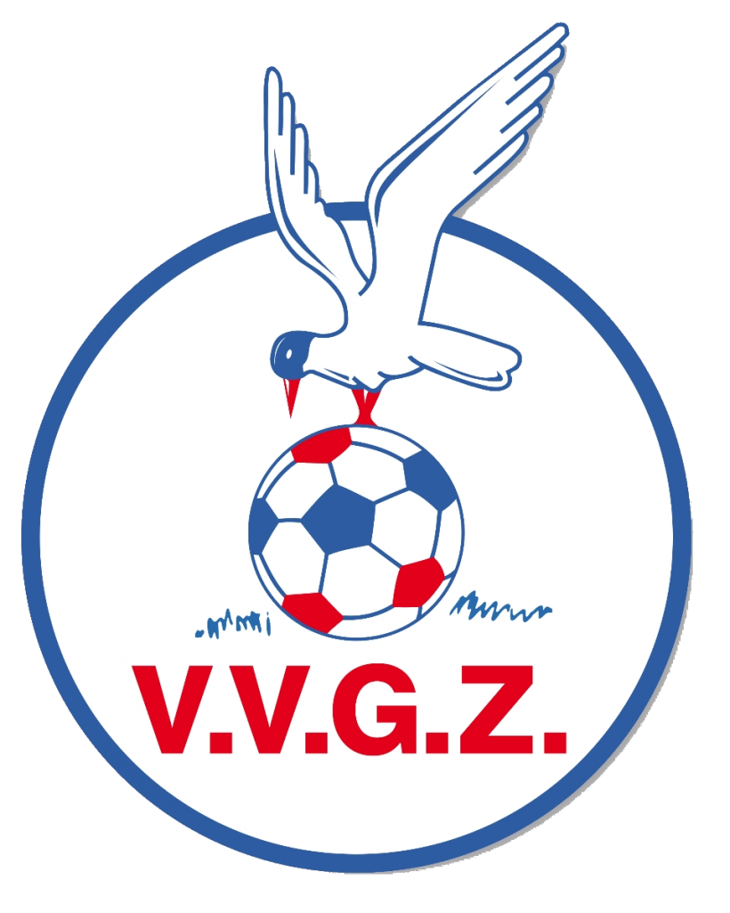

Me eerste jaren voetbal was bij de club VVGZ. Heel leuk en gezillig team. ben in het seizoen 14/15 kampioen geworden met het team, alleen ik wou hoger op spelen steeds en bij die club werd het me niet gegund. Dus dacht ik een overstap te maken naar ASWH, de beste club bij ons in de buurt.
Toen ik net bij ASWH kwam, mocht ik meedoen aan de selectie trainingen en ben ik gelijk in het ena hoogste team gezet wat ik echt top vond, want dat niveau was voor mij dus echt prima, maar alsnog wou ik altijd in het hoogste team komen. dus paar jaar ging voorbij en bedacht ik om mee te doen aan een scoutingsdag.
De scoutingsseizoen van het 2019/2020. Me ouders zeiden altijd schrijf je in voor de scoutingsdagen. En op 1 dag besloot ik het toch maar te doen. Ik heb me scoutingsdag van jonger oranje bij de club ijselmeervogels gehad. Het liep echt top en k was zeker niet een van de mindere daar wat ik eigenlijk wel had verwacht. Hoe deze scoutingsdagen in zn werking ging is als volgt:
Ik werd bij de scoutingsdag van mijn provincie geselecteerd. Ik was echt heel blij en trots die dag, maar we waren er nog niet. Ik wilde perse de Finale ook nog winnen die op 2 juni 2020 werd gespeeld. En wie had het verwacht, maar we hebben van alle provincies gewonnen en moesten toen in de Finale tegen Noord-holland en ja we hadden de beker gewonnen hoor.
| Jaar | Plek geëindigd | Club | Team | Positie |
|---|
| 2010/2011 | 7de | VVGZ | E5 | Linksbuiten |
| 2011/2012 | 3de | VVGZ | E4 | Linksbuiten |
| 2012/2013 | 2de | VVGZ | D6 | Linksbuiten |
| 2013/2014 | 2de | VVGZ | D5 | Linksbuiten |
| 2014/2015 | Kampioen | VVGZ | D5 | Linksmidden |
| 2015/2016 | 10de | VVGZ | C5 | Keeper |
| 2016/2017 | 6de | ASWH | C2 | Linksbuiten |
| 2017/2018 | 2de | ASWH | C2 | Rechtsbuiten |
| 2018/2019 | 2de | ASWH | B2 | Linksbuiten |
| 2019/2020 | 2de (corona) | ASWH | B2 | Linksback |
| 2020/2021 | 1ste (corona) | ASWH | A2 | Linksback |
| 2021/2022 | Kampioen | ASWH | 3 | Linksback |
| Huidige | 1ste | ASWH | 2 | Linksback |